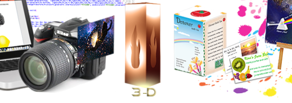
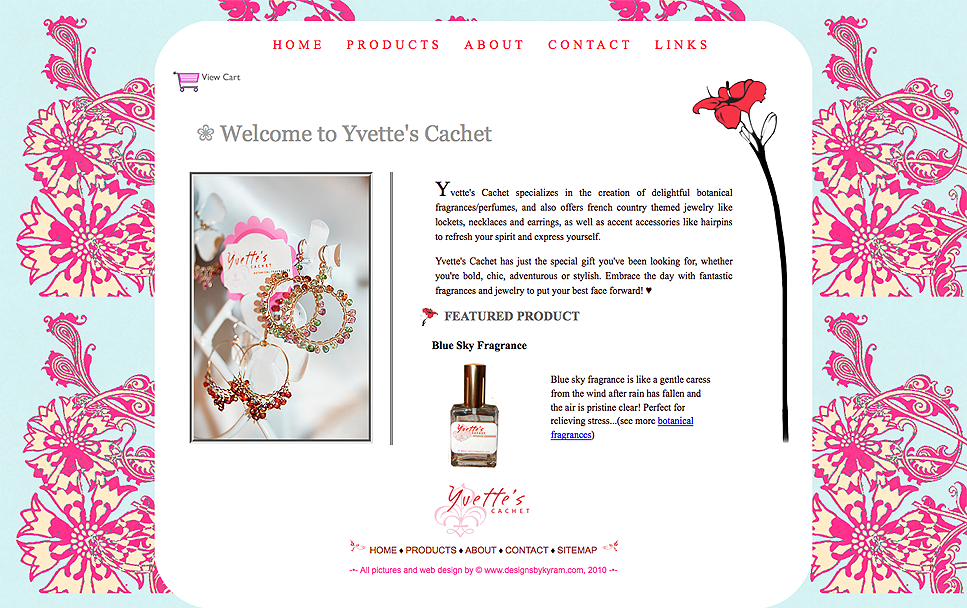
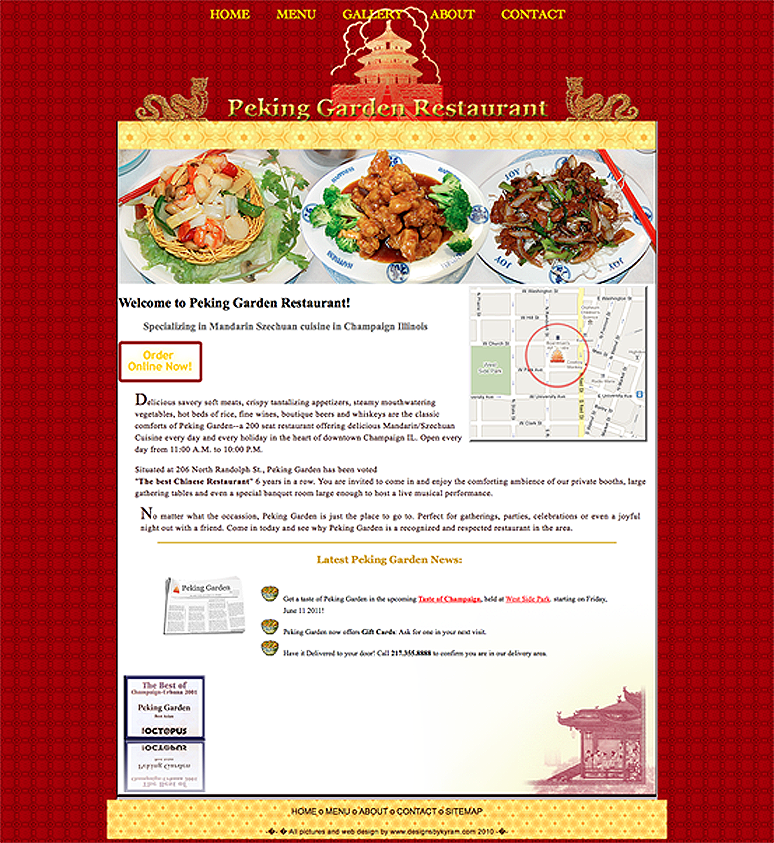
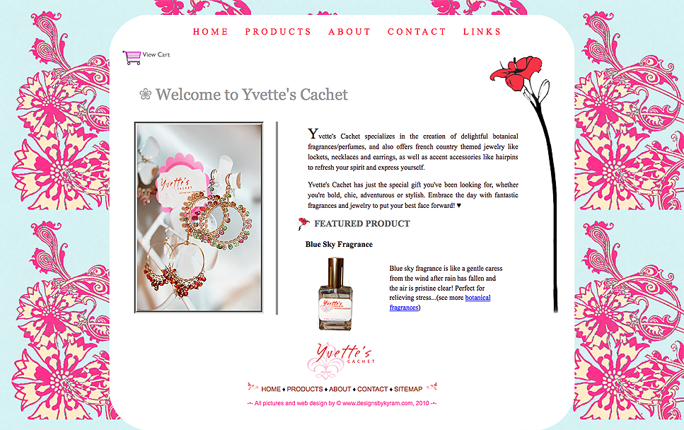
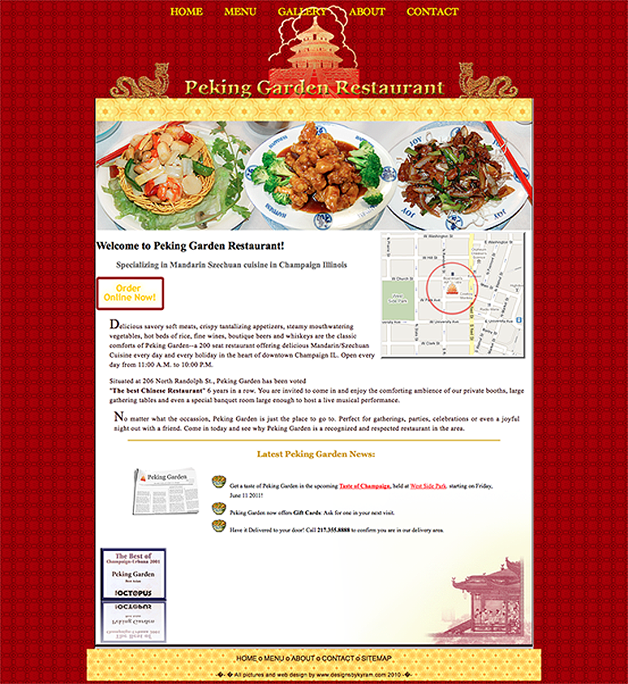

KGD Services

KGDigital offers freelance Web Design, coding websites or pages from scratch using the latest HTML5/CSS3/JavaScript tools for Desktop and Android. If you desire to have your own website or need pages produced quickly, KGDigital can produce the web design work you need, offering you an artistic custom flair which will give you the edge over your competitors, who will often use pre-made templates with hidden charges. With KGDigital, you can be assured that you will own a website of which not only you can be proud of, but also will go beyond your expectations. All built with a finesse, high craftsmanship, and with knowledge of modern standards.


Built in HTML5/CSS3, with a clean, artistic, and authentic touch.
The KGDigital Process
KGDigital offers freelance Web Design, coding websites or pages from scratch using the latest HTML5/CSS3/JavaScript tools for Desktop and Android. If you desire to have your own website or need pages produced quickly, KGDigital can produce the web design work you need, offering you an artistic custom flair which will give you the edge over your competitors, who will often use pre-made templates with hidden charges. With KGDigital, you can be assured that you will own a website of which not only you can be proud of, but also will go beyond your expectations. All built with a finesse, high craftsmanship, and with knowledge of modern standards.
The advantage to all of this? You can save time and money on these vital small business development services. Skip the hassle of coordination between different professionals and reap the benefits of hiring KGDigital for ALL of your business needs. Less price tag, faster results on increased sales for you, and all giving you that extra edge over your competitors! Whether you run a small business and are looking to get up and running fast, you're an older website owner looking for a restart, a start-up entrepreneur searching for new talent, or have an event of which you need these services for.
Don't need All of these services done? No problem! You can also hire KGDigital for any of the single services offered, or as an independent contractor. KGDigital can step in to do any of the services you are missing or would like re-done. KGDigital has the aptitude, precision and skill to fulfill the role and be a valuable and versatile member of your team.
ADDITIONAL KGDIGITAL SERVICES INCLUDE:
WEB DESIGN
Basic Custom Website:
Built in HTML5/CSS3, with a clean, artistic, and authentic touch.
Android-Compatible Website:


The latest essential web-design need; a site created especially for today's modern devices.
Website Redesign:
Let KGDigital build upon your existing website and make it better, cleaner, slicker, more modern, built in HTML5, CSS3, and JQuery languages.
GRAPHIC DESIGN
Logo Design:
Choose from 3 logo concepts crafted uniquely for your needs.
2D/3D Illustrations:
Quintessential illustrations for your site as well as for promoting products on web pages. KGDigital can produce a sequence of different 3D images to showcase your product concept.
Logo Redesign:
The redesign of an existing logo includes recreating the logo with the ability for it to be infinitely scalable without losing resolution, or becoming "jagged". This enables your logo to look smooth and sharp in any medium; whether on a business card or an outdoor billboard.

